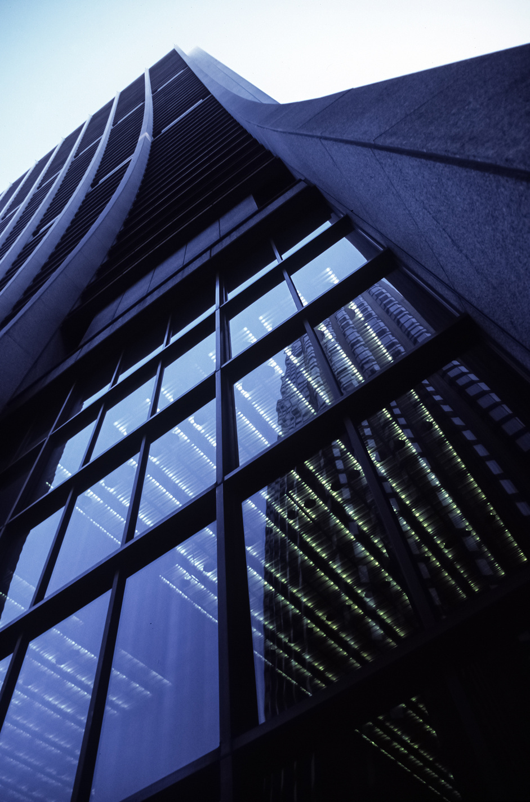
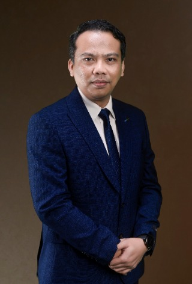

Syarikat Milikan Tunggal · Sejak 2022
Membina kepercayaan.
Mengukuhkan masa hadapan.
Syarikat terlibat dalam sektor pembinaan, kejuruteraan awam, pembekalan, pembersihan, penternakan serta makanan dan minuman.

BINA EMPIRE
ENTERPRISE
EST. 2022
2022Tahun
Ditubuhkan
Ditubuhkan
06Sektor
Utama
Utama
Kontraktor Binaan ✦
Kejuruteraan Awam ✦
Pembekalan ✦
Pembersihan ✦
Penternakan ✦
Makanan & Minuman ✦
Kontraktor Binaan ✦
Kejuruteraan Awam ✦
Pembekalan ✦
Pembersihan ✦
Penternakan ✦
Makanan & Minuman ✦
01 / Tentang Kami
Profil korporat
Keupayaan pelbagai.
Satu komitmen.
Bina Empire Enterprise merupakan syarikat milikan tunggal yang didaftarkan pada 4 Ogos 2022 dan beroperasi di Ipoh, Perak.
Syarikat terlibat dalam sektor pembinaan, kejuruteraan awam, pembekalan, pembersihan, penternakan serta makanan dan minuman. Perkhidmatan yang ditawarkan merangkumi pembinaan dan penyelenggaraan, pembekalan bahan serta peralatan, pembersihan dan pengurusan sisa, jual beli ternakan serta pengurusan kafeteria, kafe dan katering.
Disokong oleh tenaga kerja berpengalaman dan peralatan bersesuaian, syarikat komited menyediakan perkhidmatan berkualiti, cekap dan menepati masa bagi memenuhi keperluan pelanggan.

Pemilik & Pengarah SyarikatIr. Ts. Saiful Azzuan
Maklumat Pemilik
Ir. Ts. Saiful Azzuan
Bin Aznam
Pengarah Syarikat
Tempat LahirIpoh, Perak
KewarganegaraanWarganegara Malaysia
Tarikh Mula4 Ogos 2022
Carta Organisasi
Struktur Pengurusan & OperasiMuhamad Saiful Ilman Bin Aznam
NorShahirah Binti Muhaiyidin
Nuur Lisa Izzati Binti Ahmad
Bahagian Operasi
Muhammad Aqil Zarif Bin Zainal Abidin
Muhammad Hanif Bin Zamail
Penyelia
Nur Maisarah Binti Rosidi
Muhamad Afendi Bin Ahmad
Nor Azila Binti Aznam
Pelatih Industri
Nik Muhammad Suhail Bin Nik Othman
Pelatih Industri
Firdaus Sim Chong Fei
Farhanah Binti Firdaus Francis
02 / Kepakaran
Penyelesaian dari asas
hingga hasil akhir.
Sektor pembinaan, kejuruteraan awam, pembekalan, pembersihan, penternakan serta makanan dan minuman.
Kontraktor Binaan
Pembinaan dan penyelenggaraan.
↗Kejuruteraan Awam
Kejuruteraan awam.
↗Pembekalan
Pembekalan bahan serta peralatan.
↗Pembersihan
Pembersihan dan pengurusan sisa.
↗Penternakan
Jual beli ternakan.
↗Makanan & Minuman
Pengurusan kafeteria, kafe dan katering.
↗03 / Hala Tuju
Visi kami
Menjadi sebuah syarikat milikan tunggal yang unggul, berdaya saing dan dipercayai.
Menjadi sebuah syarikat milikan tunggal yang unggul, berdaya saing dan dipercayai dalam menyediakan perkhidmatan kontraktor binaan, kejuruteraan awam, pembekalan, pembersihan serta penternakan di peringkat tempatan dan nasional. Berteraskan integriti, kualiti, keselamatan dan kemampanan, syarikat komited untuk menyokong pembangunan infrastruktur serta meningkatkan kesejahteraan masyarakat secara menyeluruh.
Misi kami
Menyampaikan Perkhidmatan Berkualiti
Menyediakan perkhidmatan pembinaan, kejuruteraan awam dan pembekalan yang berkualiti tinggi serta memenuhi keperluan dan jangkaan pelanggan.
Menawarkan Penyelesaian Menyeluruh
Menyediakan penyelesaian yang cekap, selamat dan berkesan bagi kerja-kerja pembersihan serta pengurusan sisa.
Menyokong Sektor Penternakan
Menyumbang kepada pembangunan sektor pertanian dan penternakan melalui aktiviti jual beli ternakan serta produk berkaitan.
Membina Hubungan Strategik
Mewujudkan hubungan perniagaan yang kukuh dan berkekalan berasaskan kepercayaan, integriti serta kepuasan pelanggan.
Memastikan Pematuhan Operasi
Mengutamakan pematuhan terhadap semua peraturan keselamatan, piawaian industri dan keperluan perundangan dalam setiap aspek operasi syarikat.
Integriti
Mengamalkan kejujuran, amanah dan ketelusan dalam setiap urusan bagi membina kepercayaan serta hubungan profesional yang berkekalan dengan pelanggan, rakan perniagaan dan pihak berkepentingan.
Profesionalisme
Melaksanakan setiap tugasan dengan penuh tanggungjawab, disiplin dan kompetensi, berpandukan etika kerja yang tinggi serta komitmen terhadap kecemerlangan perkhidmatan.
Kualiti
Mengutamakan standard kerja yang berkualiti melalui penyampaian perkhidmatan yang cekap, kemas dan memenuhi keperluan serta kepuasan pelanggan.
Keselamatan
Menjadikan aspek keselamatan sebagai keutamaan dalam setiap operasi dengan memastikan kebajikan pekerja, pelanggan dan orang awam sentiasa terpelihara mengikut amalan serta prosedur yang ditetapkan.
Fleksibiliti
Menawarkan penyelesaian yang fleksibel dan mampu disesuaikan mengikut keperluan setiap projek bagi memastikan perkhidmatan yang diberikan sentiasa relevan dan berkesan.
Kemampanan
Menyokong amalan kerja yang mampan melalui penggunaan sumber secara bertanggungjawab serta menggalakkan pendekatan yang mesra alam dalam operasi harian syarikat.
04 / Portfolio Kumpulan
Satu empayar.
Pelbagai cabang.
Senarai projek dan pengalaman lepas Bina Empire Enterprise.
05 / Dokumen Rasmi
Pendaftaran &
pensijilan.
▣
Dokumen dilindungi. Paparan skrin penuh sahaja dan tidak disediakan untuk muat turun.
Mulakan bersama kami
Ada projek dalam
perancangan?
Mari berbincang tentang penyelesaian yang sesuai dengan keperluan organisasi anda.
Hubungi Bina Empire ↗Telefon05-831 0231
Alamat
No. 62A, Jalan Meru Impian A1,
Pusat Perniagaan Meru Impian,
30020 Ipoh, Perak Darul Ridzuan.